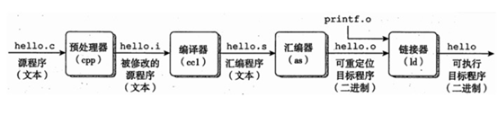
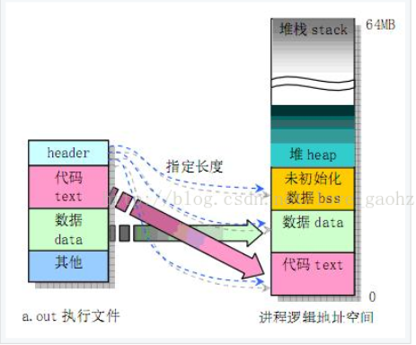
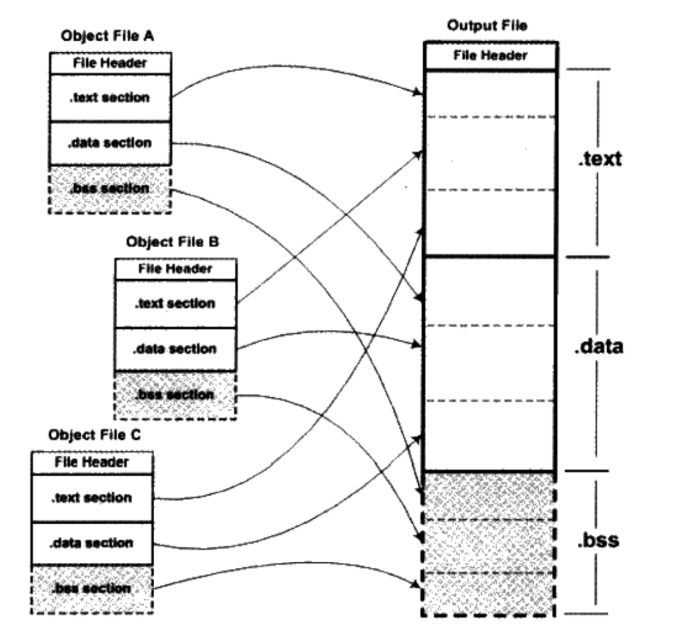

C++代码的一生
目录
c++代码变成可执行文件
（1）预处理过程
（2）编译过程
（3）汇编过程
（4）链接过程
（5）目标文件
（6）静态链接和动态链接
可执行文件变成进程
正文

一个c++程序，从.c文件，变成二进制可执行文件，会经历上述四个过程。
预处理阶段：对源代码文件中文件包含关系（头文件）、预编译语句（宏定义）进行分析和替换，生成预编译文件。
编译阶段：将经过预处理后的预编译文件转换成特定汇编代码，生成汇编文件
汇编阶段：将编译阶段生成的汇编文件转化成机器码，生成可重定位目标文件
链接阶段：将多个目标文件及所需要的库连接成最终的可执行目标文件
预处理过程
|
|
预处理最终生成.i文件。预处理主要处理“#”开头的代码指令。主要内容如下：
（1）展开所有的宏定义（#define）
（2）处理“#if”，”#endif”
（3）递归的处理“#include”文件
（4）删除所有的注释
（5）给代码，添加行号，一边编译和调试输出信息
编译过程
gcc -S hello.i -O hello.s编译过程最终生成.s文件。编译过程就是吧预处理完的文件，进行词法分析，语法分析，语义分析以及优化后产生相应的汇编代码。
关于词法分析，语法分析等这些更具体的过程，可以回顾一下编译原理这门课程，或者相关书籍。
汇编过程
|
|
汇编过程最终生成.o文件(目标文件)。这个过程相对简单，它就是将汇编代码，根据具体的对照表进行翻译，生成一句一句的机器指令的过程。
链接过程
链接器比编译器出现的还要早，在纸带打孔的时代就已经出现。链接器的作用其实就是 将不同的模块分别进行编译，生成目标文件。这样的好处是一个模块的修改，不会影响到整个系统，更便于修改和重复使用。
目标代码
目标文件主要分为两种：Windows的PE（Portable Executable）和linux下的ELF（Executable Linkable Format）,以ELF为例，它的格式如下：
| Other Data |
|---|
| .comment 存放编译器版本信 |
| .rodata 存放只读数据，如常量，const |
| .data 数据段 |
| .text 代码段 |
| ELF head 文件头 |
目标文件的头中包含一个长度为 32 个字节的 exec 数据结构，通常称为文件头结构或执行头结构，其具体定义如下：
|
|
其中一个有意思的就是 魔数，这个是头文件的最开始的两个字节。它的作用就是用来判断文件的类型。操作系统在加载可执行文件的时候，首先检查的就是这个魔数，如果魔数不正确，就不会加载。
注意上面的是ELF文件结构，这和进程的虚拟空间结构不同，这个没有.bss。进程的空间结构如下。

在C++中，虚拟内存分为代码段、数据段、BSS段、堆区、文件映射区以及栈区六部分。
代码段:包括只读存储区和文本区，其中只读存储区存储字符串常量，文本区存储程序的机器代码。
数据段：存储程序中已初始化的全局变量和静态变量
bss 段：存储未初始化的全局变量和静态变量（局部+全局），以及所有被初始化为0的全局变量和静态变量。
堆区：调用new/malloc函数时在堆区动态分配内存，同时需要调用delete/free来手动释放申请的内存。
映射区:存储动态链接库以及调用mmap函数进行的文件映射. 处理大文件。
栈：使用栈空间存储函数的返回地址、参数、局部变量、返回值
链接分为两种，一种是动态链接，一种是静态链接
静态链接

静态链接做的事情如上图所示，它将不同的目标文件合并，生成一个大的目标文件。
静态链接具体做的事情如下：
（1）空间与地址的分配
扫描所有的输入目标文件,并且获得它们的各个段的长度,属性和位置,并且将输入目标文件中的符号表中所有的符号和符号引用收集起来，统一放在一个全局符号表中。这一步中，链接器将能获得所有输入目标文件的段长度，并且将它们合并，计算出输出文件中各个段合并后的长度与位置，并建立映射关系
（2）符号解析与重定位 使用上面第一步中收集的信息,读取输入文件中段的数据，重定位数据,并且进行符号解析与重定位，调整代码中的地址等。事实上第二步是链接过程的核心,特别是重定位的过程。
动态链接
可以看出来静态链接有一个很不好的地方在于，它浪费了内存空间。如上图所示，假设object C是某个公共库的文件，例如printf的二进制文件，假设占1M。那么假设电脑中有100个使用了printf的程序。那么printf最终会占用100M。所以这个时候动态链接出现了，
动态链接的核心就是，运行的时候加载需要的目标文件。这样带来的挑战就是如何装载时重定位。
具体的过程大概是这样。 在形成可执行程序时，发现引用了一个外部的函数，此时会检查动态链接库，发现这个函数名是一个动态链接符号，此时可执行程序就不对这个符号进行重定位，而把这个过程留到装载时再进行。
可执行文件变成一个进程
一般的操作系统都包括shell。shell是壳, 它是一个软件, 它提供了一个用户操作系统的一个接口, 通过shell我们可以调用其他软件,比如chmod chown firefox man 等, 它可以调用内核来工作. shell其实就是一个接口；
在我们通过shell，运行一个编译链接好的二进制文件后。发生了什么事情呢？
首先，shell是一个进程，它有一个主循环，能通过getcmd 读取命令行的输入。然后它调用fork生成一个shell进程的副本。父shell调用wait ，而子进程执行用户命令。
需要留意的是父子进程拥有不同的内存空间和寄存器，改变一个进程中的变量不会影响另一个进程。 但是刚开始子进程和父shell使用的都是同一份代码。
接下来shell在调用 exec，将从某个文件（通常是可执行文件）里读取内存镜像，并将其替换到调用它的进程的内存空间。这份文件必 须符合特定的格式，规定文件的哪一部分是指令，哪一部分是数据，哪里是指令的开始等等。而这里的文件就是我们上面提到的ELF文件。
子进程执行完后exit.然后返回到父进程 shell.